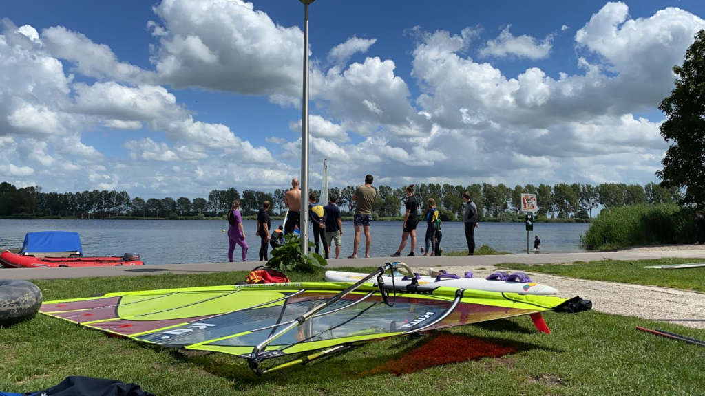

Training
Gedurende het trainingsseizoen (vanaf ingaan zomertijd tot ingaan wintertijd) wordt er op de woensdagavond training gegeven. Tijdens deze trainingen zal er voornamelijk in de praktijk geoefend worden, maar er is uiteraard ook aandacht voor een stuk theorie over het windsurfen.
Elke woensdagavond starten wij om 19:00 uur met de trainingen. Iedereen is echter zelf verantwoordelijk voor het optuigen van zijn/haar materiaal, waardoor het aan te raden is om tussen 18:00 uur en 18:30 uur aanwezig te zijn.
Tijdens deze trainingen wordt er les gegeven door gediplomeerde instructeurs, al dan niet bijgestaan door onze actieve vrijwilligers. Ook ligt er te allen tijde een reddingsboot klaar en dragen de nieuwe cursisten altijd een zwemvest (beschikbaar op de vereniging).
De trainingen zijn kosteloos te volgen voor al onze leden, al worden nieuwe leden zonder surfervaring aangeraden eerst een dagcursus bij ons te volgen om zo de basis onder de knie te krijgen.
De trainingen kunnen het eerste jaar gevolgd worden met materiaal van de vereniging. Hiermee is de drempel zo laag mogelijk gemaakt voor mensen die willen leren surfen. Het enige wat je nodig hebt is zwemkleding en een goed humeur!
